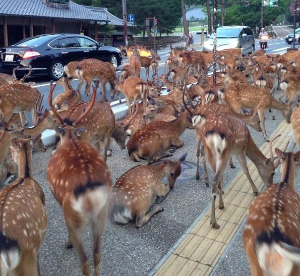

Sports
The first sport I've ever played was baseball. I started baseball when I was 5 and played all the way up to 2020. Nobody wanted to play in 2020 because we were going to have to wear masks while playing and nobody signed up. I then played played in 7th and 8th grade for my final years and then didn't sign up for highschool baseball. I also played basketball in 8th grade but didn't like it. I also love to play football but never played for a team. I usually play with my friends in a backyard and usually have 2 people per team.
Music Taste
When I was younger, I never really liked music. I would always hate hearing it for whatever reason, but my friends started playing their music. They told me to listen to 2055 by Sleepy Hallow, and I loved it. I was also told to listen to Polo G, who became my favorite artist for about a year. I ended up finding my favorite artist of all time while watching the movie Fallout. I heard the song Conversations by Juice WRLD, and I instantly had to find more of his music. I like the way he talks about the reality of drugs and relationships. He is also one of the best freestyle artists, with most of his songs being made without a script. He would just sit in the studio and start singing. Now I listen to many artists and have a playlist of 8 hours.
Top 5 Songs
- Bloody Blade by Juice WRLD
- Glock In My Lap by 21 Savage and Metro Boomin
- Cold Blood by Juice WRLD
- Die Young by Sleepy Hallow and 347 Aiden
- Drowning by Juice WRLD and Taylor Swift
Dream Vacation
 My dream vacation is to go to Japan. I've always wanted to go to Japan because of the nature. I also would like to eat at the street markets that they have. I would like to go into Tokyo for a bit but I'd rather stay in more natureistic areas like Osaka or Nara. I also would like to hike through the mountains and cherry blossom trees. Nara has deer that just walk around the city and there are vending machines to feed them.